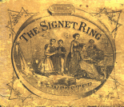

|
Joseph Philbrick [Philbrook?] Webster was born in Manchester, New Hampshire on 18 February 1819 and died in Elkhorn, Wisconson, on 18 January 1875 [both dates are preserved on his gravestone], at the age of 55. His parents were Amos and Bethia (DeCosta) Webster. Webster's home is now the home of the Walworth County Historical Society. He is buried at the Hazel Ridge Cemetery in Elkhorn. A bronze plate attached to the large granite boulder marking his grave reads, "Joseph P. Webster. In the Sweet By and By We Shall Meet." He studied music with Lowell Mason and George James Webb. His career combined music teacher, choir leader (he had been a recitalist prior to getting bronchitis), professional songwriter, and piano salesman. He taught himself to play the violin and flute. He was married on 18 Jun 1848 to Joanna Huse (Rowell) Webster (Feb 1829 - 30 Dec 1912) [she was the adopted daughter of brother John Goffe Webster and Mary Huse] and they had four children: Joseph Haydn Webster (3 Jun 1852 - <1944), Louis Beethoven Webster (16 Jul 1858 - 16 Mar 1944), Frederick Handel Huse Webster (25 Dec 1864 - 12 May 1948), and Mary Helen Webster (29 Jul 1855 - <1944). He composed over 1000 songs. His most popular songs were Lorena (1857) (see The Sweetheart of the Civil War: The True Story of the Song "Lorena" by Earnest K. Emurian, Natick, Mass.: Wilde, 1962), Little Maud (1859), and The Sweet By-and-By (1868). NOTE: the Source* columns below refer either: (1) The Lester S. Levy Collection by Box/Item number; (2) the Library of Congress' LCCN or CALL numbers in brackets (which can be used to request copies from the Photoduplication Services Division there); (3) if just labeled "LoC" then it is available at the American Memories webpages at the Library of Congress and the numbers represent both part of their filename and the actual copyright number assignment; (4) Duke University; or (5) at the Mills Music Library of the University of Wisconsin at Madison. |
| Title | Words | Source |
|---|---|---|
| 1844 | ||
| There's a Change in the Things I Love | Thomas Dunn English, 1819-1902 | 125/117@Levy |
| 1848 | ||
| Tread Lightly (Quartette) [24 Feb] | Thomas M. Newson | 440460@LoC; Mills |
| 1852 | ||
| The Harp of Affection (Serenade) [9 Sep] | Dr. D. B. Mullen | 520750@LoC; Mills |
| Green Old Hills (from Songs and Quartettes of the Alleghanians, No. 3) | from The Message Bird | 511060@LoC |
| Oh How I Love My Mountain Home (from Songs and Quartets of the Alleghanians, No. 4) | Webster | 1879-17553@LoC |
| The Ivy and Elm [29 Sep] (from Songs and Quartettes of the Alleghanians, No. 5) | Martin F. Tupper | 511070@loC |
| 1853 | ||
| Appeal of the Reformed Inebriate (Solo and Chorus) [8 Jun] (from Songs and Quartets of the Alleghanians, No. 2 [of 6]) | Mrs. Ellen Stone | 530690@LoC; Mills |
| The Sailor Boy's Song of the Sea (from Songs and Quartets of the Alleghanians, No. 1) | Webster | 1880-11435@LoC |
| 1854 | ||
| Nelly Gordon | Sydner Dyer | Old-VIII,10@UNC-CH |
| 1855 | ||
| Annie Lee (Ballad) [10 Sep] | Sidney Dyer | 580890@LoC |
| Oh Scorn Not Tny Brother (Ballad) | anonymous | @Newberry Library, Chicago |
| The Old Canoe (Song and Chorus) | anonymous | am4134@Mills |
| Softly, Lightly, Sweetly Sing | T. M. Newton | 023/060 |
| Spare the Old Homestead | Sydney Dyer | 1883-01941@LoC |
| The Orphan's Lament; or, I'm Standing by Your Grave Mother | Sarah Tittle Bolton, 1814-1893 | 1883-01942@LoC |
| They Buried Her Under the Old Elm Tree (companion to Oh Scorn Not Thy Brother) | Sarah Tittle Barrett Bolton, 1814-1893 | @Indiana Library; @Mills |
| 1856 | ||
| Dear Happy Days Farewell | Josesph Philbrick Webster, 1819-1875 | am1240@Mills |
| 1857 | ||
| Bell Maie (No. 2 from Prairie Flowers) | Henry De Lafayette Webster, 1824-1896 | am1225@Mills |
| Broken Ties (No. 2 from 3 Beautiful Ballads) | Montgomery | am1228@Mills |
| Flow on Red Verde | ???? | ???? |
| Going Up & Coming Down (Ballad) | Webster | 050/031 |
| John Brown (Ballad) | Charles Mackay | @Newberry Library, Chicago; Mills |
| Lorena (No. 3 from 3 Beautiful Ballads) | Henry De Lafayette Webster, 1824-1896 | 088/144; 088/145; 127/147; 101/061; 119/066 & Duke |
| Oh! That I Were a Man of Wealth (from Prairie Flowers, No. 1 0f 12) | Edwin Burgess | 100009755@LoC/IHAS-CWM; @LoC/HSM |
| Rest Thee Now Weary One (No. 1 from 3 Beautiful Ballads) | Francis A. Fuller | am4151@Mills; Chicago: Higgins Bros. |
| The Spot Where Eddie Sleeps, or Six Lonely Years Have Come and Gone (No. 9 from Prairie Flowers) | Henry De Lafayette Webster, 1824-1896 | am1274@Mills; Chicago: H. M. Higgins |
| Willie's Grave | Henry DeLafayette Webster, 1824-1896 | @Newberry Library, Chicago |
| 1858 | ||
| Angels Told Me So (No. 10 from Prairie Flowers) | Sidney Dyer | am1219@Mills |
| Answer to "Gentle Annie" | Miss Helen P. Young | @Newbery Library, Chicago |
| Come to Me, Darling, My Sorrows to Lighten (No. 5 [of 12] from Prairie Flowers) | Charles Brennan | Chicago: Higgins Brothers; @Indiana |
| Onward (from Songs of the Land of Sunset) | Hebron Bell | 126/080 |
| Hurry Up the Good Time Coming | Sydney Dyer | am4916@UW-Madison |
| The Fay of the Falls | Sydney Dyer | 127/059; Mills |
| Two on Earth, and Two in Heaven | Webster | 102/102 |
| Mother, I Am Weary (No. 6 from Prairie Flowers) | Mrs. S. E. Daws | @Newberry Library, Chicago |
| 1859 | ||
| Allie Lennon | Sanford Fillmore Bennett, 1836-1898 | am1217@Mills |
| Adieu! (No. 51 from Webster's Vocal Gems) (Song & Quartette) | Robert Burns | @Newberry Library, Chicago |
| Be Good to Little May; or, The Mother's Last Wish (No. 5 from Webster's VOCAL GEMS; No. 50 [?]) | Alice Cary, 1820-1871 | am1222@Mills |
| "Far Away" (Quartette) (No. 45 from SONGS of the Land of Sunset) | anonymous | @Newberry Library, Chicago |
| Home Is Sad Without Mother (Duett) | Rev. Henry De Lafayette Webster, 1824-1896 | am4917@UW-M |
| Little Maud [1859/1865] | Thomas B. Aldrich | 063/077; @Duke |
| My Dear Old Home (No. 42 from SONGS of the Land of Sunset) | anon. | am4121@Mills; Chicago: H. M. Higgins |
| My Mother's Song (Duett) (No. 44 from SONGS of the Land of Sunset) | Finley Johnson | am4125@Mills; Chicago: H. M. Higgins |
| Our Bonnie Blue-Eyed Nell [Song and Chorus] (No. 38 from SONGS of the Land of Sunset) | Tamar Anne Kermode | am4142@Mills; Chicago: H. M. Higgins |
| "Oir Mother!" ("Not Dead, But Gone Before!") (Duette) (No. 47 from SONGS of the Land of Sunset) | George Henry Webb | @Newberry Library, Chicago |
| Over the River (No. 72 from Western Gems: 100 Songs by J. P. Webster, 1862) | Miss Nancy A. W. Priest | Chicago: H. M. Higgins; Mills |
| Poor Willie's All Alone (No. 67 from SONGS of the Land of Sunset) | anon. | am4148@Mills; Chicago: H. M. Higgins |
| Strike the Harp in Wildest Numbers (No. 41 from SONGS of the Land of Sunset) | S. G. Burgess | @Newberry Library, Chicago |
| The Crocus (No. 13 from SONGS of the Land of Sunset) | Harriet Beecher Stowe, 1811-1896 | am1233@Mills |
| The Vine-Wreathed Cottage (Song with QUINTETT (ad lib.)) | "Orlie" | am1297@Mills; Chicago: H. M. Higgins |
| Willie Lee (Song and Chorus) [arr. with brillian variations by A. P. Wyman (1867)] | M. Star | [1867]@HSM/LoC; Mills; [1859] Chicago: H. M. Higgins |
| 1860 | ||
| The Green Lanes of England (No. 61 from WOODLAND WARBLINGS) | Charles Mackay, 1814-1889 | am1198@Mills; Chicago: H. M. Higgins |
| I and Jenny Davis (No. 55 from WOODLAND WARBLINGS) | Luella Clark | am4028@Mills; Chicago: H. M. Higgins |
| I'll Twine 'Mid the Ringlets [No. 57] [1860; 1888] | Maud Irving | [M1621.W] |
| Little Household Angel (No. 54 from WOODLAND WARBLINGS)[also 1863 Polka version] | Augusta Moore | am4104@Mills; Chicago: H. M. Higgins |
| Little Tot (No. 61 from WOODLAND WARBLINGS) | Mrs. F. D. Cace | am4108@Mills; Chicago: H. M. Higgins |
| Mother, Watch the Little Feet [Song and Chorus] (No. 58 from WOODLAND WARBLINGS) | Mrs. Mary Ann Kidder, 1820-1905 | am4117@Mills; Chicago: H. M. Higgins |
| My Little Wife and I (No. 64 from WOODLAND WARBLINGS) | Alford Sully | am4123@Mills; H. M. Higgins |
| Our Neutral Friend [1860/1866] | Luke Collin | 089/108 |
| Song of Mary (No. 62 from WOODLAND WARBLINGS) | Mrs. Frank Leland | am1272@Mills; Chicago: H. M. Higgins |
| The Old Man Dreams | Granville M. Ballard | 138/037 |
| When You and I Were Young [Song and Chorus] (No. 59 from WOODLAND WARBLINGS) | Lady Spencer from "The Homestead" | am1306@Mills; Chicago: H. M. Higgins |
| Zula Zong | Granville M. Ballard | 131/162; LoC |
| 1861 | ||
| Brave Men Behold Your Fallen Chief (Tribute to Col. Ellsworth) | H. C. Ballard | 087/062; 087/063; a4794@Duke |
| Don't Be Sorrowful Darling (1862?) | Alice Carey | 063/032; 129/035 |
| Elsie Grey [aka Elsie Gray] ([No. 2] from FLOWERS of AFFECTION) | anon. | am1245@Mills; New York: J. L. Peters |
| Jennie's Grave {Duett} (No. 69; No. 6 from 6 NEW SONGS) | "Montcomery" | am4038@Mills; Chicago: H. M. Higgins |
| Little Frock and Shoes | Webster | 106/046 |
| New Star Spangled Banner | Edna Dean Proctor | 008/008; Mills |
| Oh! Wait 'Till the Good Time Coming Comes (No. 1 from 6 NEW SONGS) [No. 66] | B. M. Lawrence | am4132@Mills; Chicago: H. M. Higgins |
| There's a Light at the Window for Me (Song and Chorus) | Luke Collin | am1282@Mills; Chicago: Lyon & Healy |
| Under the Snow (No. 3 from 6 New Songs) [No. 68] | Sylvia A. Lawson | am4922@UW-Madison |
| 1862 | ||
| Annie Gray | W. W. H. McCurdy | am1220@Mills |
| Bachelor's Hall (An Irish Song) | anon. Irish | @Newberry Library, Chicago |
| Civille Bellum or Brother and the Fallen Dragoon [c1862; 21 Jan 1863] | anon. | 200002218@LoC/IHAS-CWM |
| Fill Up the Ranks Boys (Rallying Song [and Chorus]) [c1862; 21 Jan 1863] | Oliver Wendell Holmes, 1809-1894 | 200002224@LoC/IHAS-CWM; Mills |
| Hattie Bell (No. 30 from WESTERN GEMS: 100 SONGS by J. P. Webster) | Frank D. Hatfield | am4019@Mills; Chicago: H. M. Higgins |
| Hattie Bell [arr. by Rudolf de Roode] (from GEMS OF MELODY: 100 Songs by J. P. Webster, No. 30) | none | @LoC/HSM |
| Katie West (Song & Chorus) | J. C. Burnett | am4094Mills; Chicago: H. M. Higgins |
| Oh, Fallen Hero [c1862; 21 Jan 1863] | Bayard Taylor | 200002231@LoC/IHAS-CWM |
| Old Abe Has Gone and Did It, Boys | Sanford Fillmore Bennett, 1836-1898 | b2076@Duke; Mills; 200002232@LoC/IHAS-CWM |
| Our Country's in Danger and Calls for You Now | Webster | b2068@Duke; 200002233@LoC/IHAS-CWM; Mills |
| The American Ensign (Quartette) [c1862; 20 Jan 1863] | Joseph H. Nichols | 200002213@LoC/IHAS-CWM |
| The Grand Rally (Quartette) | J. B. L. Soule | 200000796@LoC/IHAS-CWM |
| The Irish Volunteer [c1862; 21 Jan 1863] | Sanford Fillmore Bennett | 200002225@LoC/IHAS-CWM; Mills |
| The Negro Emancipation Song [c1862; 21 Jan 1863] | Sanford Fillmore Bennett, 1836-1898 | 200002229@LoC/IHAS-CWM |
| The Soldier to His Mother [c1862; 21 Jan 1863] | Sanford Fillmore Bennett, 1836-1898 | 200002242@LoC/IHAS-CWM |
| The Volunteers Wife (Ballad) [c1862; 21 Jan 1863] | anon. | 200002246@LoC/IHAS-CWM |
| Uncle Sam's Boys | Sanford Filmore Bennett, 1836-1898 | 090/094 |
| We Are the Gay & Happy Suckers, From the State of Illinois (Song & Chorus) [c1862; 21 Jan 1863] | anon. | 200002247@LoC/IHAS-CWM |
| 1863 | ||
| An Hour at the Old Playground (Ballad) | from the New York Mirror | am4021@Mills; Chicago: H. M. Higgins |
| God Bless Thy Silver Hair (Ballad) (No. 4 from PRAIRIE ZEPHYR A collection of original SONGS by J. P. WEBSTER) | anon. | am1197@Mills; Chicago: H. M. Higgins |
| Jennie Maud or The Old Farm Cottage (from PRAIRIE ZEPHYR A Collection of original SONGS by J. P. WEBETER) [Song and Chorus] | Josephine Furman | am4037@Mills; New York: J. L. Peters; Plate No. 3396-3 |
| Let Independence Be Our Boast [from Prairie Zephyr: A Collection of Original Songs by J. P. Webster (No. 3 of 11)] [c1863; 11 Jan 1864] | Honorable Wyman Spooner | 200002227@LoC/IHAS-CWM; Mills |
| Mother, Can I Go? (Ballad) [c1863; 11 Jan 1864] | anon. | 200002228@LoC/IHAS-CWM; Mills |
| My Own Janette (No 6 from PRAIRIE ZEPHYR) | anonymous | @Newbewwrry Library, Chicago; H. M. Higgins, Chicago |
| Our Soldier [c1863; filed 11 Jan 1864] | E. B. Dewing | 20002236@LoC/IHAS-CWM |
| Paul Vane; or, Lorena's Reply | Henry DeLafayette Webster | 094/072; 094/073; 131/078; Duke |
| Red on the Bough Hung the Roses of June (from PRAIRIE ZEPHYR: A collection of original SONGS by J. P. WEBSTER) | Emma Alice Browne, 1836-1890 | am4150@Mills; Chicago: H. M. Higgins |
| Round Me Hover Dreams of Childhood | Josephine Furman | am4153@UW-Madison/Mills; Chicago: H. M. Higgins |
| Scott and the Veteran (from Flowers of Affection) [c1862; 21 Jan 63] | Bayard Taylor | 20000240@LoC/IHAS-CWM |
| She Sleeps Beneath the Elms [Song and Chorus] [30 Dec] (c1864) | Josephine Furman | am1266@Mills; Chicago: Root & Cady, Plate No. 354 4 |
| Sing Me to Rest, Mother (No. 5 from PRAIRIE ZEPHYR) | Francis Ashbury Baker, 1820-1865 | Newberry Library; Mills; Chicago: H. M. Higgins |
| Sing Softly, Love [30 Dec] (c1864) | Sanford Fillmore Bennett, 1836-1898 | Chicago: Root & Cady, Plate No. 353-4 |
| Song of the Slave [c1863; 11 Jan 1864] | S. H. M. Byers | 200002243@LoC/IHAS-CWM |
| The Slave's Appeal [Quartette] [c1863; 11 Jan 1864] | Barbara Brande | 200002241@LoC/IHAS-CWM; Mills |
| That's So; or, The Union Cause Is Gaining Ground | Lowell Call | 088/059 |
| The Patriot Mother's Prayer 'Protect My Boy' (Chant) | Webster | 089/113; Duke |
| There's a Cottage on the Hill-side of the Noble Prairie State; or, The Dying Volunteer [21 Jan] | Minnie Moore | 200002223@LoC/IHAS-CWM |
| Touch Us Gently, Time! (from PRAIRIE ZEPHYR: A collection of original SONGS by J. P. WEBSTER) | Barry Cornwall [aka Bryan Waller Procter], 1787-1874, (from the poem A Petition to Time) | am1287Mills; Chicago: H. M. Higgins |
| 1864 | ||
| Columbia, My Native Land [11 Jan] | Emma A. Browne | 200002220@LoC/IHAS-CWM |
| I Stand on Memory's Golden Shore (Song and Chorus) (No. 3 from Six Songs by J. P. Webster) [28 Jan] | Sanford Fillmore Bennett, 1836-1898 | wsm2459@Mills; Chicago: Root & Cady, Plate No. 363-4 |
| 1865 | ||
| Brother in the Army [25 Jan] | Webster | 200002219@LoC/IHAS-CWM; Chicago: Root & Cady, Plate No. 427 5 |
| How Fondly I Think of Our Last Tender Meeting (Song and Chorus) | Mrs. Elizabeth. B. (Dewing) Kaup | am4022@Mills; Chicago: Lyon & Healy |
| Jenny Wade, the Herione of Gettysburg [23 Jan] | Mrs. Elizabeth B. (Dewing) Kaup | 20000226@LoC/IHAS-CWM; Mills; Chicago: Root & Cady, Plate No. 428 6 |
| Lead Me Along or Sister's Last Words(Song and Chorus) (No. 3 from Three Songs by J. P. Webster) | Mrs. Elizabeth B. (Dewing) Kaup | am4100@Mills; Milwaukee: H. N. Hempsted |
| My Blue Eyed Boy (Song and Chorus) (No. 2 from Three Songs by J. P. Webster) | Granville M. Ballard | am4120@Mills; Milwaukee: H. N. Hempsted |
| My Father's Grave | Webster | 131/046 |
| Our Soldiers Welcome Home | E. B. Dewing | 200002237@LoC/IHAS-CWM; Mills |
| Sweet Is Thy Memory, Mary Alleen (Song and Quartette) | W. Dexter Smith Jr., 1842-1909 | am1280@Mills; Chicago: Lyon & Healy |
| The Wounded Boy at Kenesaw [25 Jan] | Granville M. Ballard Esq. | 200002248@LoC/IHAS-CWM; Mills; Chicago: Root & Cady, Plate No. 426 4 |
| 'Twill Be Summer Time By and By | L. J. Bates | 088/099 |
| When No One Else Is By (Ballad) | W. Dexter Smith Jr., 1842-1909 | am1304@Mills; Chicago: Lyon & Healy |
| 1866 | ||
| Be of Good Cheer My Darling | Sanford Fillmore Bennett, 1836-1898 | am1224@Mills |
| Darling, Stay at Home To-Night | Luke Collin | am1226@Mills |
| Dear Buried Hopes (Ballad) | Sanford Fillmore Bennett, 1836-1898 | am1238@Mills |
| Do Not Wound the Heart That Loves Thee | W. Dexter Smith Jr., 1842?-1909 | am1242@Mills |
| Dog and Gun | E. B. Dewing | 027/033 |
| Evelyn Vere (Song and Chorus) | Clarence [J. Prentice?] | am4915@UW-M |
| Have a Kind Word For All (Song and Chorus) (No. 21 from SWEET VOICES: A Collection of Popular Songs by J. P. WEBSTER) | W. Dexter Smith Jr., 1842-1909 | am4020@Mills |
| Get Out of Mexico | [Mrs.] Elizabeth B. Dewing [Kaup] | 012/158; 012/159; 088/030 & Duke |
| Kiss Me Before You Go (Song and Chorus) | Minnie Hubbard | am4095@Mills; Chicago: Lyon & Healy |
| Mother's Waiting at the Door (Song and Chorus) | W. Dexter Smith, 1842-1909 | am4118@Mills; Chicago: Lyon & Healy |
| Protect The Freedman | Luke Collin | 015/104; 089/133 |
| Sit Down by My Side as of Old, Mary Dear (Ballad) (No. 12 from SWEET VOICES: A Collection of Popular Songs by J. P. Webster) | Sanford Fillmore Bennett, 1833-1898 | @Newbverry Library, Chicago; am1268@Mills |
| The Great Rebellion (Cantata [on the death of Lincoln]) [8 May 1866] | Sanford Filmore Bennett, 1836-1898 | am5215@Mills; Chicago: Lyon & Healy |
| The Roses Are Blooming Where Sweet Nellie Sleeps | Sanford Fillmore Bennett, 1836-1898 | am4152@Mills; Chicago: Lyon & Healy; Plate No. 98 |
| Where the Little Feet Are Waiting; or, The Golden Stair (Transcription by A. P. Wyman) | W. Dexter Smith, Jr., 1842?-1909 | 130/129; 106/235 |
| 1867 | ||
| Don't Speak to Me Coldly, Dear Friend (Ballad) | Sanford Fillmore Bennett, 1836-1896 | am1243@Mills |
| One Little Heart Has Ceased to Beat (Song and Chorus) | Luke Collin | am4140@Mills; Chicago: Lyon and Healy; Plate No. 152 |
| The Sounds of the Sea (Song and Chorus) | anon. from the N.Y. Mirror, Vol. 17, p. 392, 30 May 1849 | am1273@Mills; Chicago: Lyon and Healy, Plate No. 142 |
| Who Will Be My Angel Bride? (No. 30 from SWEET VOICES: A Collection of Popular Songs by J. P. WEBSTER) | J. L. Bates | am1310@Mills; Chicago: Lyon & Healy; Boston: Oliver Ditson and Co. |
| 1868 | ||
| A Smoking His Cigar [24 May] | Ason O'Fagun | 006/003; Chicago: Root & Cady, Plate No. 829 4 |
| All Rights for All! [30 Jan] | [Mrs.] Elizabeth B. Dewing [Kaup], Esq., 18??-1885 | am1216@Mills; Chicago: Root & Cady, Plate No. 767 5 |
| Bessie Jayne [25 Mar] (No. 2 from Songs of the Present Time) | Luke Collin | am1226@Mills; Chicago: Root & Cady, Plate No. 788 5 |
| Come to Me, Memories Olden [3 Oct] | Sanford Fillmore Bennett, 1836-1898 | am1230@Mills; Chicago: Root & Cady, Plate No. 4833 |
| Cousin John [14 Nov] | Sanford Fillmore Bennet, 1836-1898 | Chicago: Root & Cady, Plate Nos. 826 4 & 4857 |
| Cupid and Mammon (Vocal Duet) [21 Feb] | C. C. Haskins | am1234@Mills; Chicago: Root & Cady, Plate No. 814-10 |
| Floraline Shore (Ballad) [19 Dec] | [Mrs.] Elizabeth B. Dewing [Kaup] | am1249@Mills; Chicago: Root & Cady, Plate No. 4877 |
| Fortune Waltz (Introducing Going Up & Coming Down) (No. 25 from GEMS OF MELODY) (Arranged by Rudolf De Roode) | none | 100003839@LoC; Chicago: H. M. Higgins |
| Hurrah For General Grant [20 May] | Luke Collin | 006/066; 006/065: Chicago: Root & Cady, Plate No. 830 4 |
| I've Twined Me a Bower (Quickstep) (Melody by Webster; Arr. by E. Mack) | none | 100003841@LoC/IHAS-CWM |
| Little Hattie Harvey (Christmas and New Year's Song [and Chorus]) [30 Dec] | [Mrs.] Elizabeth B. Dewing [Kaup] | am4103@Mills; Chicago: Root & Cady, Plate No. 4893 |
| Lost Lomie Laine (Song and Chorus) [25 Mar] (No. 6 from Songs of the Present Time) | Luke Collin | am4112@Mills; Chicago: Root & Cady, Plate No. 789 5 |
| My Lily (Song and Chorus) [14 Nov] | Sanford Fillmore Bennett, 1836-1898 | am4122@Mills; Chicago: Root & Cady, Plate No. 4848 |
| My Margaret [25 Mar] | Luke Collin | @HSM/LoC; Mills; Chicago: Root & Cady, Plate No. 818 3 |
| Northmen, Awake [22 Apr] | Sanford Fillmore Bennett, 1836-1898 | scsm0196@LoC; Chicago: Root & Cady, Plate No. 796 6 |
| Oh! Lady Fair (aka, Oh! Lady Fair, I Dream of Thee) [7 Dec] | Sanford Fillmore Bennett, 1836-1898 | am4130@Mills; Chicago: Root & Cady, Plate No. 4871 |
| Old Glory and U. S. Grant (No. 3 of First Series from Songs of the Present Time) [17 Jun] | L. J. Bates | am4135Mills; Chicago: Root & Cady, no plate number |
| Sister May (Song and Chorus) [14 Nov] | Sanford Fillmore Bennett, 1836-1898 | am1268@Mills; Chicago: Root & Cady, Plate No. 4847 |
| Summer's Sweets Shall Bloom Again [3 Jun] (from Songs of the Present Time) | L. J. Bates | am1277@Mills; Chicago: Root & Cady, Plate No. 828 3 |
| The Cottage in the Wood (No. 2 from Songs of the Present Time) [16 Mar] | Luke Collin | am1232Mills; Chicago: Roor & Cady, Plate No. 798 4 |
| The Past We Can Never Recall Jamie (Response to When You & I Were Young, Maggie) [16 Mar] | Luke Collin | 131/077; Chicago: Root & Cady, Plate No. 821 4 & 5673 [8 Sep; for guitar, arr. by W. L. Hayden] |
| The Spring at the Foot of the Hill [Song and Chorus) (No. 7 from Songs of the Present Time) | Luke Collin | am1275@Mills; Chicago: Root & Cady, Plate No. 799 6 |
| The Sweet By-And-By | Sanford Fillmore Bennett, 1836-1898 | 130/100; 180/091; LoC; The Signet Ring: pp. 90-91 |
| What Might Have Been! (Song and Chorus) [24 Oct] | Sanford Fillmore Bennett, 1836-1898 | am1299@Mills; Chicago: Root & Cady, Plate No. 4840 |
| When I Lie Dreaming (Song) (No. 1 from Songs of the Present Time) [20 Jun] | L. J. Bates | am1303@Mills; Chicago: Root & Cady, Plate Nos. 833 3 & 4933 |
| Woman Is Going to Vote (Song and Chorus) (from Songs of the Present Time) [22 Apr] | Luke Collin | am1312@Mills; Chicago: Root & Cady, Plate No. 790 5 |

T H ES I G N E T R I N G:A NEW COLLECTION OFMusic and Hymns, Composed for Sabbath Schools, &c.BYJ. P. WEBSTER.CHICAGO:Published by LYON & HEALY, 116 Washington St.BOSTON: O. Ditson & Co. PHILADELPHIA: C. W. A. Trumpler
|
||
| Webster | pp. 3-4 | |
| Sanford Fillmore Bennett, 1836-1898 | p. 5 | |
| Sanford Fillmore Bennett, 1836-1898 | pp. 6-7 | |
| Sanford Fillmore Bennett, 1836-1898 | p. 7 | |
| Webster | pp. 8-9 | |
| Sanford Fillmore Bennett, 1836-1898 | p. 9 | |
| Sanford Fillmore Bennett, 1836-1898 | pp. 10-11 | |
| Sanford Fillmore Bennett, 1836-1898 | pp. 12-13 | |
| Sanford Fillmore Bennett, 1836-1898 | p. 13 | |
| Sanford Fillmore Bennett, 1836-1898 | pp. 14-15 | |
| Sanford Fillmore Bennett, 1836-1898 | pp. 15-16 | |
| Sanford Fillmore Bennett, 1836-1898 | p. 17 | |
| Sanford Fillmore Bennett, 1836-1898 | p. 18 | |
| Sanford Fillmore Bennett, 1836-1898 | pp. 19-20 | |
| Sanford Fillmore Bennett, 1836-1898 | pp. 20-21 | |
| Sanford Fillmore Bennett, 1836-1898 | pp. 22-23 | |
| Sanford Fillmore Bennett, 1836-1898 | pp. 24-25 | |
| Sanford Fillmore Bennett, 1836-1898 | p. 26 | |
| Sanford Fillmore Bennett, 1836-1898 | p. 27 | |
| Sanford Fillmore Bennett, 1836-1898 | pp. 28-29 | |
| Sanford Fillmore Bennett, 1836-1898 | p. 29 | |
| Sanford Fillmore Bennett, 1836-1898 | pp. 30-31 | |
| Sanford Fillmore Bennett, 1836-1898 | p. 31 | |
| Sanford Fillmore Bennett, 1836-1898 | po. 32 | |
| Sanford Fillmore Bennett, 1836-1898 | p. 39 | |
| Sanford Fillmore Bennett, 1836-1898 | pp. 40-41 | |
| Sanford Fillmore Bennett, 1836-1898 | pp. 41-42 | |
| Sanford Fillmore Bennett, 1836-1898 | pp. 43-44 | |
| Sanford Fillmore Bennett, 1836-1898 | pp. 44-46 |
| Sanford Fillmore Bennett, 1836-1898 | pp. 47-49 | |
| Sanford Fillmore Bennett, 1836-1898 | pp. 49-50 | |
| Sanford Fillmore Bennett, 1836-1898 | p. 51 | |
| Sanford Fillmore Bennett, 1836-1898 | pp. 52-54 | |
| Sanford Fillmore Bennett, 1836-1898 | pp. 54-56 | |
| Sanford Fillmore Bennett, 1836-1898 | pp. 57-59 | |
| Sanford Fillmore Bennett, 1836-1898 | pp. 59-60 | |
| Sanford Fillmore Bennett, 1836-1898 | pp. 61-62 | |
| Sanford Fillmore Bennett, 1836-1898 | pp. 62-64 | |
| Sanford Fillmore Bennett, 1836-1898 | p. 65 | |
| Sanford Fillmore Bennett, 1836-1898 | pp. 66-67 | |
| Sanford Fillmore Bennett, 1836-1898 | pp. 67-68 |
| John Greenleaf Whittier, 1807-1892 | pp. 69-70 |
| Sanford Fillmore Bennett, 1836-1898 | pp. 70-71 |
| Sanford Fillmore Bennett, 1836-1898 | pp. 72-73 |
| Altered from the Little Corporal by Mrs. A. B. Carne | pp. 74-75 |
| Sanford Fillmore Bennett, 1836-1898 | p. 76 |
| Sanford Fillmore Bennett, 1836-1898 | p. 77 |
| Sanford Fillmore Bennett, 1836-1898 | pp. 78-79 |
| Sanford Fillmore Bennett, 1836-1898 | p. 80 |
| Sanford Fillmore Bennett, 1836-1898 | pp. 82-83 |
| Sanford Fillmore Bennett, 1836-1898 | pp. 84-86 |
| Sanford Fillmore Bennett, 1836-1898 | pp. 86-87 |
| Sanford Fillmore Bennett, 1836-1898 | pp. 88-89 |
| Sanford Fillmore Bennett, 1836-1898 | pp. 90-91 |
| from the Child's World | p. 92 |
| Sanford Fillmore Bennett, 1836-1898 | pp. 94-95 |
| Sanford Fillmore Bennett, 1836-1898 | pp. 96-97 |
| Sanford Fillmore Bennett, 1836-1898 | pp. 97-98 |
| Sanford Fillmore Bennett, 1836-1898 | pp. 99-100 |
| Johnson Barker | pp. 102-103 |
| from the Myrtle, of 1857 | pp. 104-105 |
| Sanford Fillmore Bennett, 1836-1898 | pp. 105-106 |
| Sanford Fillmore Bennett, 1836-1898 | p. 107 |
| Sanford Fillmore Bennett, 1836-1898 | p. 108 |
| Sanford Fillmore Bennett, 1836-1898 | pp. 114-115 |
| from the Child's Paper | pp. 118-119 |
| Isadore Gilbert | pp. 122-123 |
| from the Well Spring | pp. 125-126 |
| Sanford Fillmore Bennett, 1836-1898 | p. 131 |
| Sanford Fillmore Bennett, 1836-1898 | p. 145 |
| Benjamin W. Colder | pp. 146-147 | |
| from the Sunday School Advocate | pp. 150-151 |
| Sanford Fillmore Bennett, 1836-1898 | p. 156 |
| Sanford Fillmore Bennett, 1836-1898 | p. 157-158 |
| 1869 | ||
| Call Me Darling, Darling Call Me (Song and Chorus) [6 Sep] | anonymous | am1229@Mills; Chicago: Root & Cady, Plate No. 5680 |
| Come to Me, Dearest [29 Jun] | Edwin Bruce | Mills; Chicago: Root & Cady, Plate No. 5617 |
| Darling Ella (Song and Chorus) [20 May] | Luke Collin | am1235@Mills; Chihcago: Root & Cady, Plate No. 5571 |
| Dawning of the Better Day (No. 13 from CHOICE QUARTETS) [14 Apr] | L. J. Bates | am1237Mills; Chicago: Root & Cady, Plate No. 5496 |
| Hope on the Unseen Shore [circa Dec. 1869] | P. S. Pennell | [Cleveland: S. Brainard's Sons] Chicago: Root & Cady, Plate No. 5740 |
| In Dreams of My Childhood; or, Memories' Graves [21 Sep] | Webster | Chicago: Root & Cady, Plate No. 5682 |
| The Land O' the Leal (Song and Chorus) [22 Jan] | Lady Catherine Nairne [aka Lady Carolina Nairne of Perthshire, Scotland, 1766-1845] | am4099@Mills; Chicago: Root & Cady, Plate No. 5441 |
| Little Dimpled Hands (Song and Chorus) [1 Jun] | Miss Sara Maria Wells | am4102@Mills; Chicago: Root & Cady, Plate No. 5565 |
| Nora MacRae (Song) [15 May] | Luke Collin | Mills; Chicago: Root & Cady, Plate No. 5546 |
| Our Own [4 Dec] | Luke Collin | 015/088; Chicago: Root & Cady, Plate No. 5736 |
| Old Friends (c1868) [8 Jan] | Sanford Fillmore Bennett, 1836-1898 | Chicago: Root & Cady, Plate No. 4851 |
| Some Sweet Day [28 Aug] | Webster | Chicago: Root & Cady, Plate No. 5668 |
| The Sweet Times Were the Old (Song and Chorus) [30 Jul] | Sanford Fillmore Bennett, 1836-1898 | am1281@Mills; Chicago: Root & Cady, Plate No. 5635 |
| The Union Pacific Railway (aka The Union Pacific) (Song and Chorus) [24 Jun] | [Mrs.] Elizabeth B. Dewing [Kaup] | am1295@Mills; Chicago: Root & Cady, Plate No. 5619 |
| There's a Darling Girl I Know [28 Aug] | Webster | Chicago: Root & Cady, Plate No. 5660 |
| Under the Beautiful Stars [24 Jun] | Luke Collin | 1874-03569@LoC; Chicago: Root & Cady, Plate No. 5601 |
| What Then (aka "What Then!") (Song and Chorus) [18 Aug] | Mrs. William H. Hammersley | am1300@Mills; Chicago: Root & Cady, Plate No. 5652 |
| When I Am Gone (Duett) [28 Jul] | E. B. Dewing | am1301@UW-Madison/Mills; Chicago: Root & Cady, Plate No. 5634 |
| 1870 | ||
| Beautiful Angels [9 Apr] | Webster | Chicago: Root & Cady, Plate No. 5800 |
| Bonnie Annie Lee; or, I'm Hame Again [15 Aug] | Webster | Chicago: Root & Cady, Plate No. 5931 |
| Darling Blue Eyed Mell [3 Mar] | Webster | Chicago: Root & Cady, Plate No. 5771 |
| Ervie Morie (12 Aug) | Webster | Chicago: Root & Cady, Plate No. 5928 |
| Good Luck [15 Aug] | Webster | Chicago: Root & Cady, Plate No. 5932 |
| How Sweetly She's Sleeping (Duet) [4 Apr] | Webster | Chicago: Root & Cady, Plate No. 5791 |
| I Am Waiting (Song and Chorus) | Philip S. Moxom | am4025@Mills |
| I Am Weary and Faint in the Battle of Life [23 Sep] | P. S. Pennell Esq. | 02110@LoC; Chicago: Root & Cady, Plate No. 5954 |
| I Don't Sing 'Cause I Can't [23 May] | Webster | Chicago: Root & Cady, Plate No. 5860 |
| Johnny Is a Farmer Boy (Song and Chorus) [15 Jun] | Luke Collin | am4093@Mills; Chicago: Root & Cady, Plate No. 5879 |
| Kiss Me Good Night (Song) [9 Apr] | L. J. Bates | am4096@Mills; Chicago: Root & Cady, Plate No. 5801 |
| Kitty M'Cree O'Tossell [12 Nov] | Edward Capern | 03735@LoC; Chicago: Root & Cady, Plate No. 6010 |
| Last Words (Ballad) | anonymous | @Newberry Library, Chicago; Root & Cady, Chicago; Plate no. 5975 |
| Lizzie the Lass of the Brown Wavy Hair [Song and Chorus] [May 14] | Luke Collin | Chicago: Root & Cady, Plate No. 5805 |
| Marie (Song) [15 Aug] | J. L. Forest | am4114@Mills; Chicago: Root & Cady, Plate No. 5940 |
| Medora [23 Apr] | Webster | Chicago: Root & Cady, Plate No. 5804 |
| Oh, Father Take My Hand [aka O Father Take My Hand] (Sacred Song & Chorus) [1 Aug] | Miss Nellie A. Anderson | Chicago: Root & Cady / Cleveland: S. Brainard's Sons, Plate No. 5921 |
| On the Banks of the Pearl [21 Nov] | Alden Field | 03980@LoC; Chicago: Root & Cady, Plate No. 6014 |
| Open the Gates [18 Apr] | Webster | Chicago: Root & Cady, Plate No. 5808 |
| Our Turn Is Coming [2 Dec] | L. J. Bates | 04293@LoC; Chicago: Root & Cady, Plate No. 6038 |
| She Shines in Honor Like a Star (Song and Chorus) [25 Feb] | L. J. Bates | am1265@Mills; Chicago: Root & Cady, Plate No. 5765 |
| The Days That Are No More (Quartet) [21 May] | Webster | Chicago: Root & Cady, Plate No. 5868 |
| The Harp of Katie Bell [7 Feb] | Webster | Chicago: Root & Cady, Plate No. 5760 |
| The Master's Gold Year [23 Sep] | L. J. Bates | 02111@LoC; Chicago: Root & Cady, Plate No. 5970 |
| Together [12 Aug] | Webster | Chicago: Root & Cady, Plate No. 5923 |
| Tomorrow! (Duet) [16 Sep] | Nellie A. Anderson | Mills; Chicago: Root & Cady, Plate No. 5963 |
| 1871 | ||
| Always of Thee [3 Apr] | Luke Collin | 02929@LoC |
| Dear Old Friends at Home (No. 5 from Sweet Voices: A Collection of Popular Songs by J. P. Webster) | Dexter Smith, 1842?-1909 | am1241@Mills |
| I Stand Beside a Lonely Grave [16 Mar] | Annie (Anna) M. Curtis | 02259@LoC; Chicago: Root & Cady, Plate No. 6084 |
| Oh Say to My Spirit, Thy Bride Will I Be [10 Feb] | C. Ernst Fahnestock | 01104@LoC; Chicago: Root & Cady, Plate No. 6064 |
| Only Love Me [22 Jul] | Alfred Sully, Esq. | 06895@LoC; Chicago: Root & Cady, Plate No. 6180 |
| The Dear Sweet Bells of Memory [3 Apr] | Margaret Bothwell Stewart | 02928@LoC |
| The Olive of Love [17 Jul] | J. O. Barrett | 06740@LoC; Chicago: Root & Cady, Plate No. 6104 |
| Touches of Little Hands [11 Mar] | Alice Carey,1820-1871 | 02110@LoC; Chicago: Root & Cady, Plate No. 6082 |
| When I Courted Mary Ann [6 Feb] | Alfred Sully | 00975@LoC; Chicago: Root & Cady, Plate No. 6062 |
| Why Not I [3 Oct] | Webster | Chicago: Root & Cady, Plate No. 6223 |
| 1872 | ||
| Drifting (The Sweet Day Is Dying) | Faustine | Mills; 06180@LoC |
| Evelyn | Sanford Fillmore Bennett, 1836-1898 | 04848@LoC |
| Kitty and Ben [Song] | Hope Ardor | am4098@Mills; Boston: Oliver Ditson and Co.; Plate No. 27280 |
| Seven Oud | Gus Williams | 026/104; LoC |
| The Love of the Good and the True | Sanford Fillmore Bennett, 1836-1898 | 04846@LoC |
| The Unfinished Prayer (Song [and Chorus]) | Thomas H. Ayers, 1840-1888 | am1294@Mills; Boston: Oliver Ditson and Co.; Plate No. 27009 |
| 1873 | ||
| Bury Me in the Garden, Mother | J. W. Carhart, D. D. | 09036@LoC |
| Drifting Into Harbor; or, I Can See the Shining Shore | Rev. J. W. Carhart | 04575@LoC |
| I Am Weary Let Me Rest | Eben Eugene Rexford, 1848-1916 | 01242@LoC |
| Jessie Darling Come in Dreams | Sanford Fillmore Bennett, 1836-1898 | 09044@LoC |
| Kiss the Little Ones for Me | Eben Eugene Rexford, 1848-1916 | 01244@LoC |
| Last Good Night | ???? | Mills |
| My Beautiful, for Thee | Sanford Fillmore Bennett, 1836-1898 | 09045@LoC |
| My Heart is Still in Michigan | L. J. Bates | 133/151; 13544@LoC |
| The Beatitudes (A Cantata for Sunday Schools) | Sanford Fillmore Bennett, 1836-1898 | Whitewater Library at the University of Wisconsin; Perkins Library@Duke |
| The Last Good Night (Song or Duet) | anonymous | am1320@UW-Madson/Mills |
| The Star of Love | Luke Collin | 04568@LoC |
| Under the Violets | Hope Ardor | 01236@LoC |
| 1874 | ||
| I'm Looking Down Upon You Mother | Rev. J. W. Carhart | 10158@LoC |
| 1875 | ||
| I'm Dreaming of the Sweet Spring Time | Rev. Mrs. Van Nest | 02623@LoC; Mills |
| 1876 | ||
| Sweet Were My Dreams of Thee (Arr. by F. J. Webster) | L. H. Naghel | 10613@LoC |
| The Rosebush (Under a Rosebush) | W. W. Caldwell | 14746@LoC |
| Will the Angels Take Me Up? (Little Willie's Last Question) | Rev. E. H. Sears | 08983@LoC |
| 1878 | ||
| Oh God, Hear Their Cry! [melody by Webster] | Written & Adapted by Mrs. Clara Richie | 032B/074; 12714@LoC |
| 1880 | ||
| The Old Door Step | "Orlie" | 11870@LoC |
Unpublished and Undated Manuscriptsgraciously made available by the
| ||
| Title | Words | Music |
|---|---|---|
| Bachelor's Hall [see 1862 published version above] | none | melody by Webster |
| Black Berry Quadrille | none | Webster |
| Blackberry Mazurka | none | Webster |
| Hosanna | none | melody by Webster |
| Blessed Jesus | Joseph Philbrick Webster, 1819-1875 | O. H. Merwin |
| God's Little Girl | William Shakespeare Hays, 1837-1907 (from Poems and Songs, 1895) | melody by Webster |
| I Plucked from the Crown | Webster | Webster |
| Lonely | Rebecca Ruter Springer | Webster |
| Mary Mary Mary | Webster | melody by Webster |
| My Beautiful | none | melody by Webster |
| Quadrille | none | Webster |
| Strawberry Waltz | none | melody by Webster |